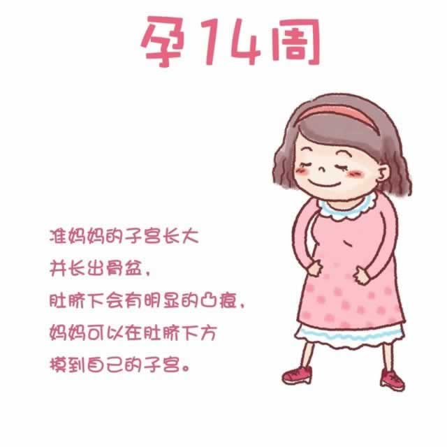

现在，子宫继续变大，长出骨盆。所以在肚脐下方可以看到明显的凸起。由于体内激素水平的升高，加之胎儿成长造成的皮肤拉伸，你的皮肤可能变得十分脆弱。有些准妈妈在这个阶段会出现痤疮样皮炎，表现出面部失去光泽、色素沉着或者毛发增多。还有一些人会患上皮疹，出现全身瘙痒。这些症状会令你感觉不舒服，但一般情况下不会对宝宝的发育造成影响。穿着宽松、纯棉面料的衣服，保持皮肤一定的湿润度有助于缓解你的不适。
随着孕周的增加，准妈妈的心肺功能负荷增加，心率增速，呼吸加快加深，这些会让此前困扰过你的焦虑情绪卷土重来。积极调整自己的心态，向家人和朋友倾诉你的感受。交几个谈得来的准妈妈朋友，或和已经有宝宝的妈妈说说自己在孕期的经历和困惑，会有利于排解你的不良情绪。
- 看看大家是如何讨论
 骨盆
骨盆- 斑块
- 色素
- 更多链接
- 查看妈妈交流圈
- 查看孕4月所有精彩话题
- 上一篇：怀孕了还能吃辣椒吗？
- 下一篇：宝宝的腿长得比胳膊长…